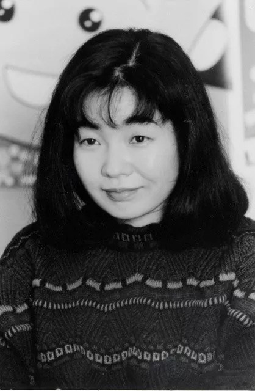

樱桃子（さくらももこ，1965年5月8日—2018年8月15日），日本漫画家、作家， 出生于日本静冈县清水市，日本漫画家、词作者、编剧、随笔作者。
1984年，以自身经历为蓝本，向集英社出版的杂志《RIBON》投去一篇以“教师”为主题创作的短篇漫画， 从而正式出道。1986年，在杂志《RIBON》连载漫画《樱桃小丸子》
2018年8月15日晚8时29分，樱桃子因乳腺癌逝世，享年53岁。 2018年11月16日，樱桃子生前的亲朋好友以及日本演艺、声优、出版等各界人士前来出席告别仪式。
| 中文名:樱桃子 | 逝世日期:2018年8月15日 |
| 外文名:さくらももこ | 星座:金牛座 |
| 别名:三浦美纪 | 毕业院校:清水西高校 |
| 国籍:日本 | 职业:漫画家、编剧、作家 |
| 出生地:静冈县清水市 | 代表作品:樱桃小丸子 |
| 出生日期:1965年5月8日 | 主要成就:1990年日本唱片大奖 |